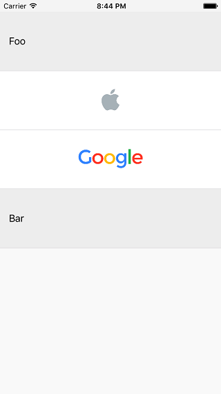

类型化却不失灵活的 Table View Controller
对（几乎）所有的 iOS 开发者来说，UITableView 就像是面包和黄油一样必不可少。大部分情况下，我们用一个 UITableViewCell 展现一种数据类型，然后通过 Identifier 来重用单元格。在 objc.io 中介绍了这种技术。当我们想在一个 Table View 中使用多个不同类型的 cell 时，情况则复杂的多。cell 的不一致让我们很难处理。
本文介绍了解决这个问题的三种途径。每种方案都试图修复前一种方案中导致的问题。第一种方法在许多 O-C 代码库中都很常见。第二种方法利用了枚举，但仍然不是最好的解决办法。第三种方法的实现使用了协议和泛型——它们是 Swift 提供给我们的神兵利器。
基础
我会带你完成一个 demo 项目（github 地址)，在这个例子中，我们创建了一个包含两种不同 cell 的 Table View：一种 cell 用于显示文本，一种 cell 用于显示图片，如下图所示：

显示两种数据（文字和图片）的 UITableView
在渲染视图时，我喜欢用值类型来封装数据。我把这个称作 view data。这里，我们使用了两个 view data：
struct TextCellViewData {
let title: String
}
struct ImageCellViewData {
let image: UIImage
}
（在真实项目中可能会有更多属性；image 属性应该声明为 NSURL ，以免对 UIKit 产生依赖）。对应地，我们也需要两种 cell 来展现这两种 view data：
class TextTableViewCell: UITableViewCell {
func updateWithViewData(viewData: TextCellViewData) {
textLabel?.text = viewData.title
}
}
class ImageTableViewCell: UITableViewCell {
func updateWithViewData(viewData: ImageCellViewData) {
imageView?.image = viewData.image
}
}
然后，我们开始进入 View Controller 中。
第一种方法:简单方法
我不喜欢一开始就讲很复杂的东西，一开始，先讲一个简单的实现，用于显示一点东西在屏幕上。
我们想让 Table View 受数组中的数据驱动（准确地说是 items 数组）。因为我们的数据是完全不同的两种结构体，所以数组的类型只能是 [Any]。在 registerCells() 方法中我们使用标准的 cell 重用机制提前注册了 cell。在 tableView(_:cellForRowAtIndexPath:) 方法中我们根据指定 IndexPath 所对应的 view data 的类型来创建 cell。我们的 View Controller 的完整实现非常简单（为简便起见，我们用 ViewController 作为 Table View 的数据源。在真实项目中，我们可能需要将数据源抽离到一个单独的对象中。）：
class ViewController: UIViewController {
@IBOutlet weak var tableView: UITableView!
var items: [Any] = [
TextCellViewData(title: "Foo"),
ImageCellViewData(image: UIImage(named: "Apple")!),
ImageCellViewData(image: UIImage(named: "Google")!),
TextCellViewData(title: "Bar"),
]
override func viewDidLoad() {
super.viewDidLoad()
tableView.dataSource = self
registerCells()
}
func registerCells() {
tableView.registerClass(TextTableViewCell.self, forCellReuseIdentifier: textCellIdentifier)
tableView.registerClass(ImageTableViewCell.self, forCellReuseIdentifier: imageCellIdentifier)
}
}
extension ViewController: UITableViewDataSource {
func tableView(tableView: UITableView, numberOfRowsInSection section: Int) -> Int {
return items.count
}
func tableView(tableView: UITableView, cellForRowAtIndexPath indexPath: NSIndexPath) -> UITableViewCell {
let viewData = items[indexPath.row]
if (viewData is TextCellViewData) {
let cell = tableView.dequeueReusableCellWithIdentifier(textCellIdentifier) as! TextTableViewCell
cell.updateWithViewData(viewData as! TextCellViewData)
return cell
} else if (viewData is ImageCellViewData) {
let cell = tableView.dequeueReusableCellWithIdentifier(imageCellIdentifier) as! ImageTableViewCell
cell.updateWithViewData(viewData as! ImageCellViewData)
return cell
}
fatalError()
}
}
这个方法是可行的，但至少有以下几个原因让我不太满意:
我们无法重用这个 ViewController。如果我们想再加入一种新的 cell，比如用于显示视频，我们不得不在三个地方修改代码：
-
加入一个新的可重用 Identifier
-
修改 registerCells() 方法
-
修改 tableView(_:cellForRowAtIndexPath:) 方法
如果我们修改 items，提供给它一种 view data，而这种 view data 类型是我们无法处理的，则我们会触发 tableView(_:cellForRowAtIndexPath:) 方法中的 fatalError()。
在 view data 和 cell 之间存在关联性，但在类型系统中却无法体现这种关联性。
第二种方法：枚举
我们可以添加一个 TableViewItem 枚举类型来从某种程度上解决这些问题，在枚举中，我们将 view data 所支持的所有类型都列举进去：
enum TableViewItem {
case Text(viewData: TextCellViewData)
case Image(viewData: ImageCellViewData)
}
然后将 items 属性的类型修改为 [TableViewItem]：
var items: [TableViewItem] = [
.Text(viewData: TextCellViewData(title: "Foo")),
.Image(viewData: ImageCellViewData(image: UIImage(named: "Apple")!)),
.Image(viewData: ImageCellViewData(image: UIImage(named: "Google")!)),
.Text(viewData: TextCellViewData(title: "Bar")),
]
再修改 registerCells() 方法:
func registerCells() {
for item in items {
let cellClass: AnyClass
let identifier: String
switch(item) {
case .Text(viewData: _):
cellClass = TextTableViewCell.self
identifier = textCellIdentifier
case .Image(viewData: _):
cellClass = ImageTableViewCell.self
identifier = imageCellIdentifier
}
tableView.registerClass(cellClass, forCellReuseIdentifier: identifier)
}
}
最后，修改 tableView(_:cellForRowAtIndexPath:) 方法：
func tableView(tableView: UITableView, cellForRowAtIndexPath indexPath: NSIndexPath) -> UITableViewCell {
let item = items[indexPath.row]
switch(item) {
case let .Text(viewData: viewData):
let cell = tableView.dequeueReusableCellWithIdentifier(textCellIdentifier) as! TextTableViewCell
cell.updateWithViewData(viewData)
return cell
case let .Image(viewData: viewData):
let cell = tableView.dequeueReusableCellWithIdentifier(imageCellIdentifier) as! ImageTableViewCell
cell.updateWithViewData(viewData)
return cell
}
}
不可否认，这种方法比上一种方法更好：
-
View Controller 只能提供枚举中指定的 view data 类型。
-
用 switch 语句代替了烦人的 if 语句，同时可以去掉 fatalError()。
然后我们还可以改进这个实现，比如将单元格的重用和设置修改为：
func tableView(tableView: UITableView, cellForRowAtIndexPath indexPath: NSIndexPath) -> UITableViewCell {
let item = items[indexPath.row]
switch(item) {
case let .Text(viewData: viewData):
return tableView.dequeueCellWithViewData(viewData) as TextTableViewCell
case let .Image(viewData: viewData):
return tableView.dequeueCellWithViewData(viewData) as ImageTableViewCell
}
}
但是悲催的是，我们得在所有的地方都要加入这些 switch 语句。到目前为止，我们只在两个地方使用了 switch 语句，但不难想象绝不仅限于此。例如，当自动布局将变得不可用我们必须使用手动布局时，我们必须在 tableView(_:heightForRowAtIndexPath:) 中再使用一个 switch 语句。
这个方法不是不可以使用，但我始终对那些 switch 语句耿耿于怀，于是我打算更进一步。
第三种（终极）方法：协议和泛型
让我们彻底推翻前两种解决办法，另起炉灶。
声明 Updatable 协议
我们的 cell 是根据 view data 来呈现不同界面的，因此我们定义一个 Updatable 协议，同时让它和一个类型 ViewData 进行绑定：
protocol Updatable: class {
typealias ViewData
func updateWithViewData(viewData: ViewData)
}
然后让我们的自定义单元格实现该协议：
extension TextTableViewCell: Updatable {
typealias ViewData = TextCellViewData
}
extension ImageTableViewCell: Updatable {
typealias ViewData = ImageCellViewData
}
看过前两种方法之后，我们不难发现，对于 items 中的每个 view data 对象，我们都需要：
-
找出要使用哪一种 cell 类
-
找出要使用哪一个重用 Identifier
-
用 veiw data 渲染 cell
定义 CellConfigurator 结构
因此，我们另外声明一个结构来包装 view data。用结构来提供更多的属性和功能。不妨把这个结构命名为 CellConfigurator:
struct CellConfigurator {
let viewData: Cell.ViewData
let reuseIdentifier: String = NSStringFromClass(Cell)
let cellClass: AnyClass = Cell.self
...
这个是一个泛型结构，使用类型参数 Cell。Cell 有两个约束：首先必须实现了 Updatable 协议，其次它必须是 UITableViewCell 子类。
CellConfigurator 有三个属性: viewData, reuseIdentifier 和 cellClass。viewData 的类型取决于 Cell 的类型，它没有默认值。其他两个属性的值则取决于 Cell 的具体类型（这是 Swift 中的新特性，它真的很棒！）。
...
// further part of CellConfigurator
func updateCell(cell: UITableViewCell) {
if let cell = cell as? Cell {
cell.updateWithViewData(viewData)
}
}
}
最后，我们将 UITableViewCell 实例传给 updateCell() 方法，就可以将 viewData 渲染到 cell 上。这里，我们不需要用到 Cell 的类型，因为 UITableViewCell 对象是通过 dequeueReusableCellWithIdentifier(_:forIndexPath:) 方法返回的。呼，这么短的实现，解释起来这么费劲。
然后，在 items 数组中生成 CellConfigurator 实例：
let items = [
CellConfigurator(viewData: TextCellViewData(title: "Foo")),
CellConfigurator(viewData: ImageCellViewData(image: UIImage(named: "Apple")!)),
CellConfigurator(viewData: ImageCellViewData(image: UIImage(named: "Google")!)),
CellConfigurator(viewData: TextCellViewData(title: "Bar")),
]
等等，怎么回事？居然出现一个编译时错误？
Type of expression is ambiguous without more context
那是因为 CellConfigurator 是泛型，但 Swift 数组只能保存相同类型，我们不能简单地把 CellConfigurator和 CellConfigurator放到同一个数组中。这是对的，但却不是我们想要的。
啊哈，稍等一会，马上搞定。Cell 类型参数实际上只在声明 viewData 的时候用到。因此，我们在 CellConfigurator 中可以不需要指明 Cell 的真实类型。新声明一个非泛型协议：
protocol CellConfiguratorType {
var reuseIdentifier: String { get }
var cellClass: AnyClass { get }
func updateCell(cell: UITableViewCell)
}
修改 CellConfigurator，让它实现 CellConfiguratorType:
extension CellConfigurator: CellConfiguratorType {
}
现在可以将 items 的类型声明为：
let items: [CellConfiguratorType]
编译通过。
View Controller
我们现在开始修改 View Controller。 registerCells() 可以变得更简单:
func registerCells() {
for cellConfigurator in items {
tableView.registerClass(cellConfigurator.cellClass, forCellReuseIdentifier: cellConfigurator.reuseIdentifier)
}
}
tableView(_:cellForRowAtIndexPath:) 方法也变得更简单了，这真是一个好消息：
func tableView(tableView: UITableView, cellForRowAtIndexPath indexPath: NSIndexPath) -> UITableViewCell {
let cellConfigurator = items[indexPath.row]
let cell = tableView.dequeueReusableCellWithIdentifier(cellConfigurator.reuseIdentifier, forIndexPath: indexPath)
cellConfigurator.updateCell(cell)
return cell
}
为能重用 View Controller，我们还必须再做一些工作。比如让 items 能够从类外部修改。这里就不再多说了，你可以在 GitHub 上参考最终实现的这个框架和 demo：ConfigurableTableViewController
结束语
我们来看一下，最后一个方案和前两种方案相比有什么不同：
-
当我们想增加一种新的 cell 时，不需要修改 View Controller
-
View Controller 是类型安全的。如果我们增加一种 cell 根本不支持的 view data 时，我们会得到一个编译错误。
-
刷新 cell 时不需要 switch 语句。